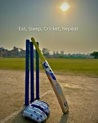
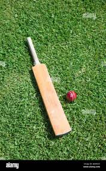
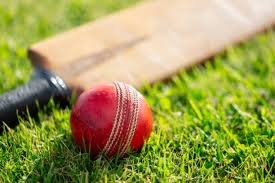

 Cricket is a bat-and-ball game played between two teams of eleven players on a field, at the centre of which is a 22-yard (20-metre; 66-foot) pitch with a wicket at each end, each comprising two bails (small sticks) balanced on three stumps. Two players from the batting team, the striker and nonstriker, stand in front of either wicket holding bats, while one player from the fielding team, the bowler, bowls the ball toward the striker's wicket from the opposite end of the pitch. The striker's goal is to hit the bowled ball with the bat and then switch places with the nonstriker, with the batting team scoring one run for each of these exchanges. Runs are also scored when the ball reaches the boundary of the field or when the ball is bowled illegally.
 The fielding team aims to prevent runs by dismissing batters (so they are "out"). Dismissal can occur in various ways, including being bowled (when the ball hits the striker's wicket and dislodges the bails), and by the fielding side either catching the ball after it is hit by the bat but before it hits the ground, or hitting a wicket with the ball before a batter can cross the crease line in front of the wicket. When ten batters have been dismissed, the innings (playing phase) ends and the teams swap roles. Forms of cricket range from traditional Test matches played over five days to the newer Twenty20 format (also known as T20), in which each team bats for a single innings of 20 overs (each "over" being a set of 6 fair opportunities for the batting team to score) and the game generally lasts three to four hours.
 Traditionally, cricketers play in all-white kit, but in limited overs cricket, they wear club or team colours. In addition to the basic kit, some players wear protective gear to prevent injury caused by the ball, which is a hard, solid spheroid made of compressed leather with a slightly raised sewn seam enclosing a cork core layered with tightly wound string.